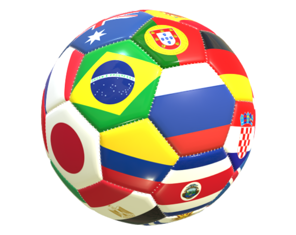

Seleções
Existem dezenas de países, alguns grandes e outros pequenos, mas no futebol mundial tamanho não é documento. Selecionamos as maiores seleções que se tornaram potências no futebol através de grandes conquistas.

Grandes seleções
Existem dezenas de países, alguns grandes e outros pequenos, mas no futebol mundial tamanho não é documento. Selecionamos as maiores seleções que se tornaram potências no futebol através de grandes conquistas.